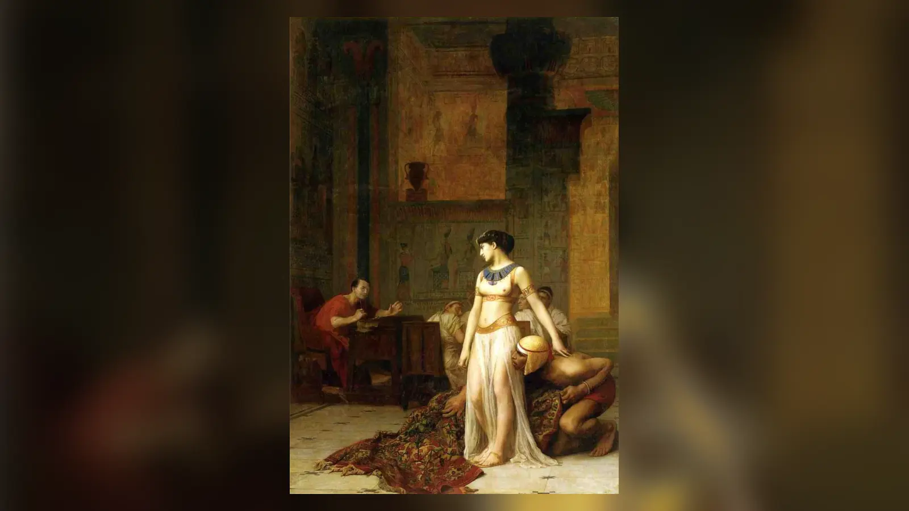
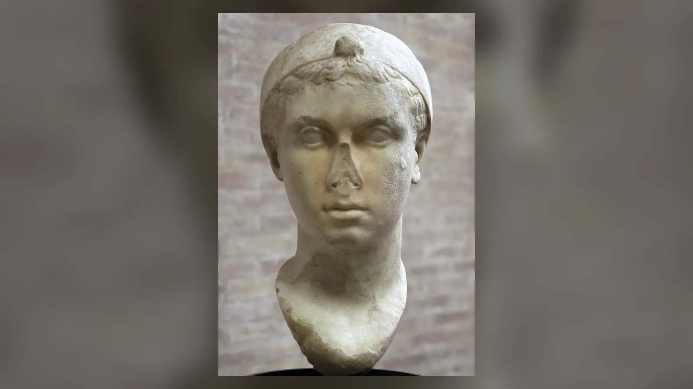
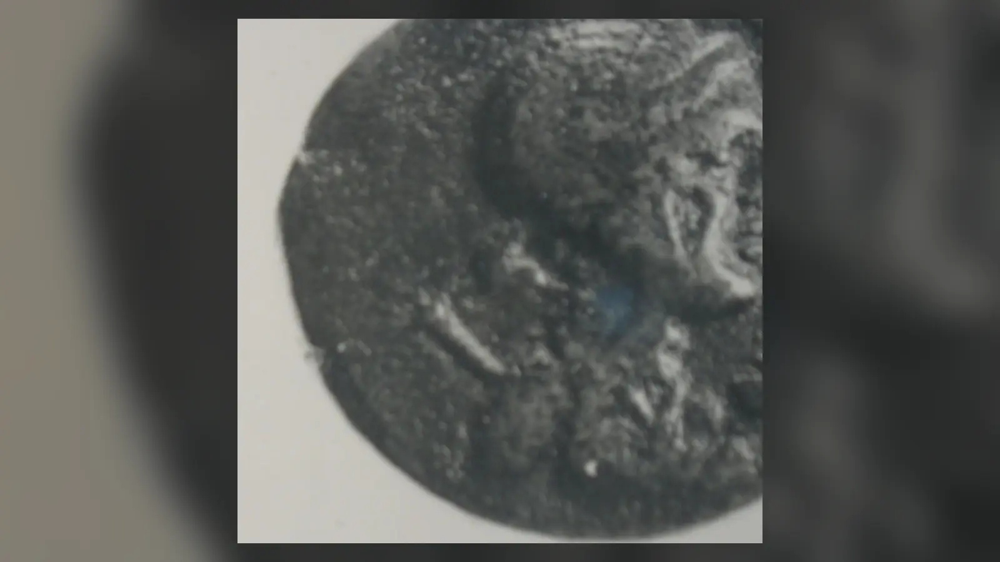
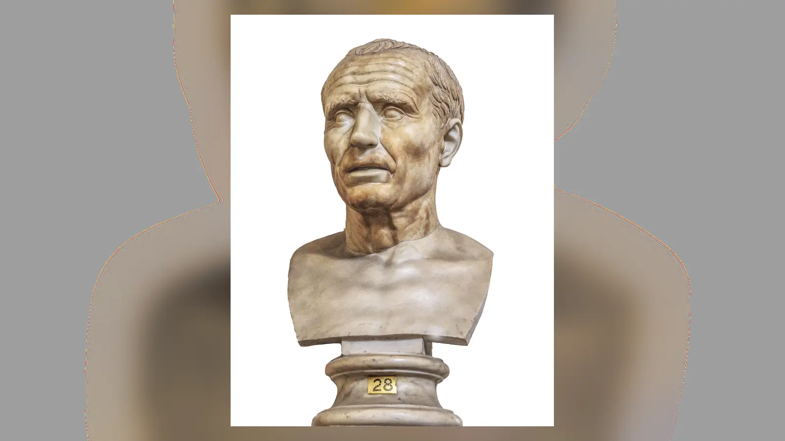

MÖ 48 sonbaharında Julius Caesar İskenderiye’ye ulaştığında Akdeniz dünyasının iki ayrı iktidar mücadelesi aynı şehirde düğümlenmişti. Caesar, Pharsalos’ta yenilgiye uğrattığı Pompeius’un peşindeydi; Kleopatra VII ise kardeşi XIII. Ptolemaios’un çevresindeki güçler tarafından iktidardan uzaklaştırılmış, Mısır tahtını geri almaya çalışıyordu. Birkaç yıl sonra ikisinin adı öylesine iç içe geçecekti ki sonraki kuşaklar bu karşılaşmayı antik dünyanın en büyük aşk hikâyelerinden biri olarak anlatacaktı. Fakat o ilk günlerde ortada romantik bir masaldan önce iki kriz vardı: Roma Cumhuriyeti’ni parçalayan bir iç savaş ve Ptolemaios hanedanını bölen bir taht kavgası.
Plutarkhos’un yüzyılı aşkın süre sonra aktardığı ünlü hikâyeye göre Kleopatra, Caesar’ın bulunduğu yere açıkça giremeyeceği için Sicilyalı Apollodoros’un yardımıyla gizlice saraya sokuldu. Popüler kültür bunu çoğu zaman Kleopatra’nın bir halıya sarılıp Caesar’ın ayakları önünde açılması şeklinde resmetti. Plutarkhos’un metnindeki nesne ise modern anlamdaki gösterişli bir halıdan ziyade yatak takımı veya kumaşların taşınabildiği bir bohça ya da çuval olarak anlaşılmaya daha uygundur. Olayın ayrıntılarını bağımsız biçimde doğrulayamıyoruz. Yine de hikâyenin temelindeki siyasi gerçek güçlüdür: Kleopatra, hayatını ve tahtını ilgilendiren bir anda Roma’nın en güçlü komutanıyla doğrudan görüşebilmek için son derece riskli bir hamle yaptı.
Bu karşılaşmanın yalnızca bir pazarlık olarak kalmadığı anlaşılıyor. Caesar ile Kleopatra arasında kişisel ve büyük olasılıkla cinsel bir ilişki gelişti; Kleopatra daha sonra Caesarion olarak tanınacak bir oğul doğurdu ve onu Caesar’ın oğlu olarak sundu. Kraliçe sonraki yıllarda Roma’ya da geldi. Buna rağmen onların birbirlerine ne hissettiklerini doğrudan anlatan özel mektuplar elimizde değildir. Caesar’ın Kleopatra’ya yazdığı bir aşk mektubunu, Kleopatra’nın ona duyduğu sevgiyi anlattığı güvenilir bir metni veya ikisinin ortak gelecek planlarını açıkladığı bir belgeyi bilmiyoruz. Dolayısıyla “Sezar ve Kleopatra aşkı” hakkında söylenebileceklerle siyasi ittifak hakkında söylenebileceklerin kanıt düzeyi aynı değildir.
Sezar İskenderiye’ye Neden Geldi?
Caesar’ın Mısır’a gelişi Kleopatra’yla başlamadı. Roma Cumhuriyeti yıllardır ağır bir siyasi çatışmanın içindeydi ve MÖ 49’da Caesar’ın Rubicon’u geçmesiyle mücadele açık iç savaşa dönüştü. Karşısındaki en önemli isim, bir zamanlar siyasi ortağı olan Gnaeus Pompeius Magnus’tu. MÖ 48’de Pharsalos’ta Caesar’ın kazandığı zafer Pompeius’un askerî konumunu çökertti. Pompeius doğu Akdeniz’e çekildi ve sonunda Mısır’a sığınmaya karar verdi. Ptolemaios hanedanının Roma ile uzun süredir devam eden ilişkileri düşünüldüğünde bu tercih bütünüyle mantıksız değildi.
Fakat Mısır’da da iktidar mücadelesi vardı. XIII. Ptolemaios henüz gençti ve saray çevresindeki Pothinus, Achillas ve Theodotus gibi güçlü isimler kararlar üzerinde etkiliydi. Pompeius’un gelişi onlar için tehlikeli bir ikilem yarattı. Yenilmiş Roma komutanına yardım etmek Caesar’ın düşmanlığını çekebilirdi; onu reddetmek de gelecekte Pompeius yeniden güçlenirse sorun yaratabilirdi. Saray çevresi daha sert bir çözüm seçti. Pompeius kıyıya çıktıktan kısa süre sonra öldürüldü.
Caesar birkaç gün sonra İskenderiye’ye ulaştığında karşısına Pompeius’un kesilmiş başının getirildiği anlatılır. Antik yazarlar Caesar’ın buna verdiği tepkiyi duygusal biçimde tasvir eder. Pompeius yalnız düşmanı değil, geçmişte siyasi ortağı ve evlilik yoluyla akrabası olmuş biriydi. Ancak Caesar’ın gerçek duygularını sahne sahne yeniden kuramayız. Pompeius’un Mısır sarayı tarafından öldürülmesinin siyasi anlamı ise açıktı: yabancı bir hanedan, Roma iç savaşının en önemli aktörlerinden birinin kaderini kendi kararıyla belirlemişti. Caesar’ın Mısır’daki konumunu yalnız intikam veya kişisel üzüntüyle açıklamak bu daha geniş sorunu kaçırır.
Mısır aynı zamanda Roma için olağanüstü ekonomik ve stratejik öneme sahipti. Ptolemaios krallığı zengin vergi kaynaklarına, büyük tarımsal üretime ve doğu Akdeniz ticaretinde merkezi bir konuma sahipti. Kleopatra’nın babası XII. Ptolemaios Auletes, iktidarını korumak ve yeniden kazanmak için Roma desteğine ağır biçimde bağımlı olmuş, Romalı finans çevreleriyle önemli borç ilişkilerine girmişti. Vasiyetinde çocuklarının ortak yönetimini düzenlerken Roma’nın bu düzenin korunmasında rol oynamasını istemişti. Caesar bu nedenle kendisini yalnız yabancı bir saray kavgasına karışan asker olarak değil, Roma’nın çıkarlarını ve daha önceki hanedan düzenlemelerini gözeten hakem olarak sunabilirdi.
Kısacası Caesar İskenderiye’ye Kleopatra için gelmedi. Pompeius’u takip ederek geldi ve karşısında Roma’nın çıkarlarıyla iç içe geçmiş bir Ptolemaios taht krizi buldu. Kleopatra’nın onun hayatındaki rolü, Caesar Mısır’a ulaştıktan sonra başladı.

Kleopatra’nın Taht Mücadelesi
Kleopatra VII, MÖ 69’da Ptolemaios hanedanının içine doğdu. Hanedan, Büyük İskender’in ölümünden sonra Mısır’da iktidar kuran Makedon kökenli I. Ptolemaios’un soyundan geliyordu. Üç yüzyıla yaklaşan yönetimleri boyunca Ptolemaioslar hem Helenistik krallık geleneklerini hem de Mısır firavunluğunun yerel meşruiyet biçimlerini kullandılar. Sarayın ana dili ve seçkin kültürü Yunancaydı; buna karşılık krallar ve kraliçeler Mısır tapınaklarında firavun olarak temsil ediliyor, yerel dinî düzenle ilişkilerini titizlikle koruyordu.
Kleopatra babası XII. Ptolemaios’un ölümünün ardından MÖ 51’de küçük kardeşi XIII. Ptolemaios ile ortak hükümdar oldu. Ptolemaios hanedanındaki kardeş evlilikleri modern okuyucuya olağanüstü görünse de hanedan meşruiyetinin korunmasıyla ilişkili yerleşik bir uygulamaydı. Ortak hükümdarlık ise gerçek bir güç paylaşımının garantisi değildi. Kısa süre içinde Kleopatra ile kardeşinin çevresi arasındaki mücadele sertleşti. Kraliçe iktidardan uzaklaştırıldı ve Mısır dışında askerî destek toplamaya yöneldi.
Bu dönemi yalnız “güzel kraliçenin erkekleri etkileme yeteneği” üzerinden anlatmak, hem Ptolemaios siyasetini hem Kleopatra’nın kapasitesini küçültür. Antik gelenek onun eğitimli, konuşma ve diplomasi becerisi güçlü bir hükümdar olduğunu aktarır. Plutarkhos, Kleopatra’nın çekiciliğini yalnız fiziksel görünüşüne değil konuşmasına, sesine ve insanlarla iletişim kurma yeteneğine bağlar; onun birçok dili kullanabildiğini de söyler. Kaç dil bildiğine ilişkin modern popüler rakamları kesinleştirmek gereksizdir, fakat Ptolemaios hükümdarları arasında Mısır dilini kullanabilmesi özellikle dikkat çekicidir.
Bununla birlikte Kleopatra’yı çağının bütün sınırlamalarını aşmış kusursuz bir devlet insanına dönüştürmek de tarih yazımının başka bir romantikleştirme biçimidir. O, hanedanının iktidarını korumaya çalışan Helenistik bir hükümdardı; gerektiğinde sert hanedan siyaseti yürüttü, Roma’nın iç mücadelelerinden yararlanmaya çalıştı ve başarısız kararlar da aldı. MÖ 48’de önündeki acil sorun çok daha somuttu: tahtı kaybetmişti ve onu geri almak için güçlü bir dış desteğe ihtiyaç duyuyordu. Caesar’ın İskenderiye’de bulunması bu nedenle olağanüstü bir fırsat yarattı.
Kleopatra Sezar’ın Huzuruna Nasıl Çıktı?
Kleopatra’nın Caesar’la ilk özel görüşmesine dair en meşhur anlatı Plutarkhos’tadır. Kraliçenin İskenderiye’ye açıkça girmesinin tehlikeli olduğu, bu nedenle Apollodoros adlı bir Sicilyalının küçük bir tekneyle onu saray bölgesine ulaştırdığı anlatılır. Ardından Kleopatra’nın bir yatak çuvalı ya da kumaş bohçası içinde taşınarak Caesar’ın bulunduğu yere sokulduğu söylenir. Plutarkhos, bu cesur düzenbazlığın Caesar üzerinde etkili olduğunu da ekler.
Yüzyıllar içinde nesne “halı”ya dönüştü. Ressamlar, tiyatro ve özellikle sinema için bu çok daha güçlü bir görüntüydü: kumaş açılır ve içinden dünyanın en ünlü kraliçesi çıkar. Fakat elimizde olayın gerçekleştiği geceye ait bir tanık raporu yoktur. Plutarkhos Caesar ile Kleopatra’dan çok sonra yazıyordu. Bu nedenle gizli girişin temel çerçevesi makul kabul edilse bile sahnenin her ayrıntısını kamera kaydı gibi değerlendiremeyiz.
Hikâyenin tarihsel açıdan asıl önemli tarafı, Kleopatra’nın risk hesabıdır. XIII. Ptolemaios’un çevresi İskenderiye’de güçlüydü. Kleopatra’nın Caesar’a ulaşması, Roma komutanını kendi taht iddiasını dinlemeye zorlayabilecek en etkili hamleydi. Burada baştan çıkarma klişesinden önce diplomasi vardır. Kraliçe, Roma iç savaşının galibiyle yüz yüze gelerek babasının vasiyetini, kendi meşruiyetini ve kardeşinin çevresinin davranışlarını tartışabilecek konuma geliyordu.
Caesar’ın Kleopatra’dan kişisel olarak etkilenmiş olması mümkündür ve sonraki ilişkinin varlığı bunu makul kılar. Fakat ilk görüşmede tam olarak ne konuşulduğunu, hangi duyguların ortaya çıktığını veya kararın hangi anda romantik ilişkiye dönüştüğünü bilmiyoruz. Antik kaynakların boş bıraktığı bu alanı modern romanların ve filmlerin doldurması, tarihsel bilgiyle dramatik kurgu arasındaki çizgiyi bulanıklaştırmıştır.
Sezar Kleopatra’ya Neden Destek Verdi?
Caesar’ın Kleopatra’ya desteğini “onu gördü ve âşık oldu” cümlesiyle açıklamak, Roma’nın Mısır’daki çıkarlarını yok sayar. Mısır doğu Akdeniz’in en zengin krallıklarından biriydi. Tahıl üretimi Roma dünyası açısından giderek daha önemli hâle geliyordu; İskenderiye ise ticaret, finans ve deniz ulaşımının büyük merkezlerinden biriydi. Ptolemaios hanedanı uzun süredir Roma siyasetinin içine çekilmişti ve XII. Ptolemaios’un yeniden tahta çıkışı bile Roma müdahalesiyle gerçekleşmişti.
Caesar ayrıca Ptolemaios taht anlaşmazlığında Roma otoritesini hakem konumuna yerleştirerek daha geniş bir mesaj veriyordu. XII. Ptolemaios’un vasiyetindeki ortak hükümdarlık düzenine dayanmak, müdahaleyi yalnız kişisel tercih olmaktan çıkarıyordu. Kleopatra’nın geri getirilmesi başlangıçta XIII. Ptolemaios’un tamamen devrilmesi anlamına da gelmiyordu; Caesar iki kardeşin ortak yönetimini yeniden kurmaya çalıştı. Sorun, XIII. Ptolemaios’un çevresinin bu düzenlemeyi kabul etmemesiyle askerî krize dönüştü.
Kleopatra Caesar açısından yararlı bir ortak olabilirdi. Roma desteğine ihtiyacı vardı, dolayısıyla iktidarını yeniden kazandığında Caesar’a düşman bir Mısır yönetimi oluşturması beklenmezdi. Bunun tersi de Kleopatra için geçerliydi: Caesar’ın desteği olmadan kardeşinin saray çevresini yenmesi çok daha zordu. İlişkinin başlangıcında iki tarafın çıkarlarının ne kadar açık biçimde kesiştiği, aşk ile siyaseti birbirinin alternatifi olarak görmenin neden yanıltıcı olduğunu gösterir.
Caesar’ın kişisel yakınlığı kararlarını etkilemiş olabilir. Ancak Mısır gibi stratejik bir krallığın geleceğini yalnız yatak odasına indirgemek Caesar’ın da Kleopatra’nın da siyasetini basitleştirir. Roma’nın iç savaş koşulları, Ptolemaios borçları, hanedan vasiyeti ve Mısır’ın istikrarı hesaba katılmadan ilişkinin siyasi boyutu anlaşılamaz.
İskenderiye Savaşı: İlişki Bir İç Savaşın Ortasında Kuruldu
Caesar’ın hakemliği İskenderiye’de barış üretmedi. XIII. Ptolemaios’un çevresindeki güçler Roma müdahalesine ve Kleopatra’nın yeniden yükselmesine direndi. Achillas’ın komutasındaki kuvvetler İskenderiye’ye yöneldi ve Caesar, elindeki sınırlı birliklerle saray bölgesinde tehlikeli bir konuma düştü. Böylece Roma iç savaşının galibi, başka bir krallığın iç savaşında kuşatılmış hâle geldi.
Çatışmalar aylar sürdü. Liman, saray bölgesi ve Pharos çevresindeki mücadele Caesar’ın deniz bağlantılarını koruması açısından kritikti. Antik kaynaklarda Caesar’ın gemileri ateşe verdirdiği ve yangının kıyıdaki yapılara yayıldığı anlatılır. Buradan doğan “Caesar İskenderiye Kütüphanesi’ni yaktı” cümlesi ise fazla kesin bir modern özet haline gelmiştir. Yangının liman çevresindeki kitap depolarına veya kitap koleksiyonlarına zarar vermiş olması mümkündür; fakat ünlü İskenderiye Kütüphanesi’nin bütün koleksiyonunun tek bir olayda Caesar tarafından tamamen yok edildiğini gösteren açık ve tartışmasız kanıt yoktur. Antik anlatılar yangının kapsamı konusunda aynı değildir.
Roma takviyelerinin ve Caesar’a destek veren doğu kuvvetlerinin ulaşması savaşın dengesini değiştirdi. XIII. Ptolemaios kaçış sırasında Nil’de boğularak öldü. Caesar’ın zaferi Kleopatra’nın iktidarını yeniden kurdu; ancak Ptolemaios hanedan geleneğinin ortak erkek hükümdar görüntüsü korundu ve Kleopatra bu kez daha küçük kardeşi XIV. Ptolemaios ile birlikte hüküm sürdü.
Bu sonuç iki taraf için de önemliydi. Kleopatra tahtını geri almıştı. Caesar ise Mısır’ı doğrudan Roma eyaletine çevirmek yerine Roma’ya dost bir Ptolemaios yönetimini ayakta tutmuştu. İlişkinin siyasi kazancı burada elle tutulur biçimde görülür. Aynı dönemde kişisel ilişkinin de geliştiği kabul edilir; fakat savaşın kendisini bir aşk uğruna yapılmış maceraya dönüştürmek olayların başlangıcını ve Roma’nın çıkarlarını gözden kaçırır.
Nil Gezisi Gerçekten Yapıldı mı?
Sezar ve Kleopatra anlatısının en romantik bölümlerinden biri, savaşın ardından Nil üzerinde yapılan uzun yolculuktur. Suetonius Caesar’ın Kleopatra ile Nil boyunca bir gemiyle ilerlediğini ve ordunun takip etmemesi durumunda neredeyse Etiyopya’ya kadar gideceğini aktarır. Appianos da benzer bir gezi geleneğini destekleyen anlatı sunar. Bununla birlikte yolculuğun kesin güzergâhı, süresi ve kapsamı konusunda modern araştırmacılar ihtiyatlıdır.
“Balayı” sözcüğü özellikle sorunludur. Caesar ile Kleopatra evli değildi ve elimizde ikisinin geziyi romantik tatil olarak tanımladığı hiçbir belge yoktur. Yolculuk gerçekleştiyse siyasi işlevleri de bulunmuş olabilir. Kleopatra kısa süre önce tahtını geri kazanmıştı; hükümdarın ülke içinde görünür olması Ptolemaios yönetimi açısından anlam taşıyordu. Caesar için de Mısır’ın coğrafyasını, zenginliğini ve yönetim yapısını yakından görmek değerli olabilirdi.
Öte yandan Caesar’ın MÖ 47’de çözmesi gereken büyük askerî sorunları vardı. Pontos Kralı II. Pharnakes’e karşı sefer ve Roma dünyasındaki iç savaş onun uzun süre Mısır’da oyalanmasını zorlaştırıyordu. Bu kronolojik baskı, antik kaynaklarda anlatılan yolculuğun ne kadar uzun olabileceği konusunda soru yaratır. Dolayısıyla bir Nil gezisinin yapılmış olmasıyla modern filmlerdeki uzun ve ihtişamlı “aşk yolculuğu” aynı iddia değildir.
Bu belirsizlik ilişkinin genel karakterine de iyi bir örnektir. Kişisel yakınlık ile hükümdarlık gösterisi aynı yolculukta bulunabilir. Antik dünyada bir kraliçenin özel hayatını devlet temsilinden tamamen ayırmak zaten zordu. Kleopatra’nın Caesar’la beraber görünmesi hem kişisel hem siyasi anlam taşıyabilirdi.

Caesarion Gerçekten Sezar’ın Oğlu muydu?
Kleopatra MÖ 47 civarında bir erkek çocuk dünyaya getirdi. Çocuk daha sonra Ptolemaios XV Caesar adıyla ortak hükümdar olacak, “Caesarion” yani kabaca “küçük Caesar” adıyla tanınacaktı. Kleopatra onu Julius Caesar’ın oğlu olarak sundu. Bu iddia onun hanedan siyaseti açısından son derece değerliydi: Roma’nın en güçlü adamıyla Ptolemaios hanedanını biyolojik olarak birleştiren çocuk, kraliçenin gelecekteki meşruiyet projesinin merkezine yerleşebilirdi.
Biyolojik babalık meselesi ise kesin değildir. Caesar’ın Mısır’da Kleopatra ile ilişkide bulunduğu dönemin Caesarion’un doğum zamanıyla uyumlu olması, babalığı mümkün ve birçok tarihçi açısından makul kılar. Suetonius bazı Yunan yazarların çocuğun görünüşü ve yürüyüşü bakımından Caesar’a benzediğini söylediklerini aktarır; ayrıca Marcus Antonius’un Caesar’ın çocuğu kabul ettiğini ileri sürdüğünden söz eder. Fakat Suetonius aynı bölümde Caesar’ın çevresinden Gaius Oppius’un, Caesarion’un onun oğlu olmadığını savunan bir eser yazdığını da bildirir. Bu, meselenin daha antik çağda siyasi tartışmaya açık olduğunu gösterir.
Sorunun Augustus döneminde ayrıca propaganda değeri vardı. Caesar’ın vasiyetle evlat edindiği Gaius Octavius, geleceğin Augustus’u, siyasi meşruiyetinin önemli bölümünü “Caesar’ın oğlu” kimliğinden üretiyordu. Kleopatra’nın biyolojik olarak Caesar’dan doğduğunu söylediği başka bir “Caesar oğlu”nun varlığı özellikle Antonius ile Octavianus arasındaki mücadelede hassas hâle gelebilirdi. Bu yüzden geç Cumhuriyet propaganda ortamının iddiaları nasıl şekillendirmiş olabileceğini hesaba katmak gerekir.
Elimizde modern anlamda babalığı kanıtlayacak genetik veri yoktur. Caesar’ın Caesarion’u Roma’daki resmî varisi yapmamış olması da tek başına biyolojik babalığı çürütmez. En güvenli sonuç şudur: Kleopatra Caesarion’u Caesar’ın oğlu olarak sundu; kronoloji bunu mümkün kılar; bazı antik gelenekler iddiayı destekler, bazıları reddeder; bağımsız biçimde kesinleştiremiyoruz.
Sezar Neden Caesarion’u Varisi Yapmadı?
Caesarion gerçekten Caesar’ın biyolojik oğlu olsa bile Roma’daki miras ve siyaset düzeni onun otomatik varis olması anlamına gelmiyordu. Caesar Roma’da Calpurnia ile evliydi. Kleopatra ise yabancı bir kraliçeydi ve Ptolemaios hanedan düzeni içinde önce XIII., ardından XIV. Ptolemaios ile ortak hükümdardı. Caesar ile Kleopatra arasında Roma hukukunun tanıdığı bir evlilik yoktu. Caesarion’un statüsü de bu nedenle Roma aristokratik ailesinde doğmuş meşru bir erkek evladın statüsüyle aynı değildi.
Caesar’ın vasiyeti bu konuda belirleyicidir. MÖ 44’te öldürüldüğünde vasiyetinde büyük yeğeni Gaius Octavius’u evlat edinmiş ve başlıca mirasçısı yapmıştı. Octavius daha sonra Gaius Julius Caesar Octavianus adını kullanacak ve Caesar’ın siyasi mirasını ele geçirme mücadelesine girişecekti. Bu tercih, Caesarion’un Roma’daki ardıllık düzeninin merkezine konmadığını açıkça gösterir.
Bundan “Caesar Caesarion’un kendi oğlu olmadığını biliyordu” sonucunu zorunlu olarak çıkarmak mümkün değildir. Roma hukukundaki statü, yabancı kraliçeyle ilişkinin niteliği ve Octavius’un Roma ailesi içindeki bağı farklı bir ardıllık mantığı yaratıyordu. Aynı şekilde “Caesarion’u varis yapmadı, demek ki Kleopatra’yı sevmiyordu” yorumu da özel duygular hakkında kanıtın taşıyamayacağı bir sonuçtur.
Kleopatra açısından ise durum gelecekte önemli olacaktı. Caesarion Mısır’da Ptolemaios hanedanının varisiydi ve annesi onun Caesar bağlantısını vurguladı. Roma’da ise Caesar’ın hukuki ve siyasi mirasını Octavianus taşıdı. Yıllar sonra Octavianus ile Kleopatra’nın karşı karşıya gelmesi, bu iki farklı “Caesar mirası”nın ne kadar tehlikeli bir propaganda potansiyeli taşıdığını gösterecekti.
Kleopatra Neden Roma’ya Gitti?
Kleopatra MÖ 46 dolaylarında Roma’ya geldi ve Caesar’ın öldürülmesine kadar olan dönemin en az bir bölümünü burada geçirdi. Antik kaynaklar onun Tiber’in karşı yakasındaki Caesar’a ait bir villada kaldığını aktarır. Caesarion’un da onunla bulunmuş olması muhtemeldir. Kraliçenin Roma’daki varlığını yalnız sevgilisini takip eden bir kadının davranışı gibi görmek ise yine Ptolemaios diplomasisini küçültür.
Mısır ile Roma arasındaki ilişkinin resmî boyutu devam ediyordu. Kleopatra, Roma’nın fiilî olarak en güçlü siyasetçisiyle ittifakını korumak zorundaydı. Caesar’ın zaferlerinden sonra Roma’daki konumu olağanüstü biçimde güçlenmişti. Mısır’ın bağımsız krallık olarak kalması, Ptolemaios tahtının güvenliği ve Caesarion’un geleceği açısından Roma’da bulunmak doğrudan siyasi değer taşıyordu.
Kleopatra’nın varlığı Romalı seçkinler için de dikkat çekiciydi. Caesar hâlâ Calpurnia ile evliydi. Kleopatra yabancı bir kraliçeydi ve Roma siyasi kültüründe “kral” kavramı Cumhuriyet’in kuruluş anlatısından beri kuşkuyla karşılanıyordu. Caesar’ın diktatörlük yetkilerinin genişlemesi, heykelleri ve onurları çevresinde zaten monarşi korkusu oluşmuştu. Böyle bir ortamda Helenistik kraliçenin Caesar’ın yakın çevresinde görünmesi, söylentilerin gelişmesi için son derece elverişliydi.
Cicero’nun mektupları Kleopatra’ya karşı kişisel hoşnutsuzluğunu açık biçimde gösterir ve kraliçenin Roma’daki varlığının seçkin çevrelerde fark edildiğini doğrular. Bu, bütün Romalıların aynı duyguyu paylaştığını göstermez; fakat Kleopatra’nın görünmez bir diplomatik ziyaretçi olmadığını kanıtlar.
Bir başka dikkat çekici anlatı, Caesar’ın yaptırdığı Venus Genetrix Tapınağı’na Kleopatra’nın altın ya da yaldızlı bir heykelini koydurduğudur. Cassius Dio bu geleneği aktarır. Eğer uygulama anlatıldığı biçimde gerçekleştiyse olağanüstü bir onurdur ve Kleopatra’nın Caesar’ın kamusal temsilinde de özel bir yer kazandığını düşündürür. Fakat buradan Caesar’ın Kleopatra’yı Roma kraliçesi yapmaya hazırlandığı veya onunla ortak bir imparatorluk planladığı sonucu çıkmaz. Onur ile geleceğe ilişkin kanıtlanmamış plan birbirinden ayrılmalıdır.
Sezar Kleopatra ile Evlenmek İstiyor muydu?
Sezar ile Kleopatra’nın evlenmek istediği fikri, ilişkilerinin romantik anlatısında sıkça karşımıza çıkar. Ancak Caesar’ın Calpurnia ile geçerli bir Roma evliliği vardı. Kleopatra da Ptolemaios hanedan düzeninde kardeşi XIV. Ptolemaios ile ortak hükümdar olarak temsil ediliyordu. Roma yurttaşı Caesar ile yabancı hükümdar Kleopatra arasında Roma hukukunun tanıdığı sıradan bir conubium ilişkisi kurulması kolay değildi. Elimizde Caesar’ın Kleopatra’yla resmî evlilik hazırlığı yaptığını gösteren güvenilir bir belge bulunmaz.
Caesar’ın son yıllarında krallık konusunda çok sayıda söylenti dolaşıyordu. Onun Roma dışında “kral” unvanı alacağı, başkenti doğuya taşıyacağı veya hanedan düzenine yöneleceği gibi iddialar siyasi ortamın parçasıydı. Bazı antik gelenekler Caesar’ın istediği kadınlarla evlenebilmesine izin verecek özel bir yasa önerileceği söylentisini de aktarır. Ancak söylentinin varlığı ile yasanın gerçekten hazırlanmış ve Kleopatra’yla evlilik planının kesinleşmiş olması aynı şey değildir.
Bu korkuların neden inandırıcı bulunduğunu anlamak daha değerlidir. Caesar’ın kişisel gücü MÖ 44’e gelindiğinde Cumhuriyet’in geleneksel sınırlarını aşmıştı. “Ömür boyu diktatör” konumu, olağanüstü onurları ve krallık sembolleri çevresindeki tartışmalar, Roma seçkinleri arasında monarşi korkusunu besliyordu. Kleopatra gibi Helenistik bir kraliçenin Roma’da bulunması bu korkulara güçlü bir görsel malzeme sağladı. Antik Bilge’deki Julius Caesar Neden Öldürüldü? makalesinde de görüldüğü gibi suikastın nedenleri, yalnız Kleopatra veya tek bir krallık söylentisiyle açıklanamayacak kadar genişti.
Dolayısıyla “Caesar Kleopatra’yla evlenecek ve Roma’yı İskenderiye’den yönetecekti” anlatısı tarihsel kanıtın ötesine geçer. İlişkilerinin kişisel olduğu konusunda güçlü gerekçeler vardır; resmî ortak monarşi projesi konusunda ise aynı güçte kanıt yoktur.
Kleopatra’nın Siyasi Gücü Yalnız Caesar’dan mı Geliyordu?
Caesar’ın desteği Kleopatra’nın MÖ 47’de tahtını geri kazanmasında belirleyiciydi. Bu gerçeği küçültmek, Roma’nın Ptolemaios siyaseti üzerindeki ağırlığını gizler. Fakat buradan Kleopatra’nın Caesar olmadan hiçbir siyasi kapasitesi bulunmadığı sonucu da çıkmaz. Kraliçe Caesar’la karşılaşmadan önce taht mücadelesine girişmiş, asker toplamış ve kendi hanedan iddiasını sürdürmüştü. Caesar’ın ölümünden sonra da yaklaşık on dört yıl daha Mısır’ı yönetti.
Kleopatra’nın temel problemi, bağımsız bir Helenistik krallığın artık Roma’nın ezici gücü karşısında hareket etmek zorunda olmasıydı. Babası XII. Ptolemaios döneminde bu bağımlılık açıkça ortaya çıkmıştı. Kraliçenin Caesar’la ittifakı bu yapısal soruna verilen bir cevaptı: Roma’yı yenmek mümkün değilse Roma’daki en güçlü aktörle doğrudan ilişki kurmak Mısır’ın hanedan çıkarlarını koruyabilirdi.
Bu stratejinin bedeli de vardı. Roma’daki iç savaşın kazananı değiştiğinde Mısır’ın güvenliği yeniden tartışmalı hâle geliyordu. Caesar’ın öldürülmesi Kleopatra’nın kurduğu bütün dengeyi birkaç saat içinde sarstı. Daha sonra Marcus Antonius ile geliştireceği ilişki de bu nedenle yalnız “yeni bir sevgili” hikâyesi değildir. Roma’nın doğusundaki en güçlü karar vericilerden biriyle ittifak, Ptolemaios krallığının hayatta kalma stratejisinin devamıydı.
Bu açıdan Sezar ve Kleopatra ilişkisi iki eşit devletin klasik diplomatik antlaşması değildi. Güç dengesi Roma lehineydi. Yine de Kleopatra pasif bir müşteri hükümdar değildi; kendi hanedanının çıkarlarını mümkün olan en geniş alanda korumaya çalışan bir kraliçeydi.
Sezar’ın Askerî Gücü İlişkinin Arka Planında Ne Kadar Önemliydi?
Kleopatra’nın Caesar’la ittifakını değerlendirirken romantik anlatının kolayca görünmez kıldığı unsur Roma askerî gücüdür. Caesar İskenderiye’ye sınırlı birlikle gelmiş ve savaş sırasında ciddi tehlike yaşamış olsa da arkasında Roma Cumhuriyeti’nin iç savaşla sınanmış askerî sistemi vardı. Takviyelerin ulaşması ve müttefik kuvvetlerin desteği Ptolemaios savaşının sonucunu değiştirdi.
Roma ordusunun disiplin, komuta ve uzun sefer deneyimi, Caesar’ın siyasetinin vazgeçilmez aracıdır. Antik Bilge’de Roma Ordusu Neden Bu Kadar Güçlüydü? sorusu ayrıca ele alınırken görülen yapısal avantajlar, Mısır’daki müdahalenin de arka planındaydı. Kleopatra’nın Caesar’ı kendi tarafına çekmesinin değeri yalnız onun şahsi nüfuzundan değil, temsil ettiği askerî ve siyasi güçten kaynaklanıyordu.
Bu durum ilişkinin kişisel yönünü geçersiz kılmaz. Tam tersine, antik hükümdarların özel ilişkilerinin neden modern “özel hayat” kavramıyla kolayca ayrılamadığını gösterir. Caesar bir sevgili olduğunda bile Roma’nın en güçlü komutanı olmaktan çıkmıyordu; Kleopatra bir partner olduğunda bile Mısır kraliçesi olmaktan çıkmıyordu.
Sezar’ın Öldürülmesi Kleopatra’yı Nasıl Etkiledi?
MÖ 15 Mart 44’te Caesar Senato toplantısının yapıldığı Pompeius kompleksindeki curia’da komplocular tarafından öldürüldü. Kleopatra o sırada Roma’daydı veya Roma çevresindeki ikametinde bulunuyordu. Suikast, onun Mısır siyasetinin temel dayanaklarından birini bir anda ortadan kaldırdı. Caesar’ın hayatta olduğu dünyada kraliçenin Roma’daki konumu doğrudan en güçlü adamla ilişkisine dayanıyordu; Caesar öldüğünde ise başkent yeniden iç savaş tehdidi altına girdi.
Kleopatra kısa süre sonra Mısır’a döndü. XIV. Ptolemaios MÖ 44 içinde öldü ve ölümünün koşulları kesin değildir. Daha sonraki gelenek Kleopatra’nın onu zehirlettiğini ileri sürer, fakat bunu tartışmasız gerçek olarak göstermek doğru olmaz. Kraliçe daha sonra küçük Caesarion’u Ptolemaios XV Caesar adıyla ortak hükümdar yaptı. Böylece Caesar’la ilişkisinden doğduğu söylenen çocuk Ptolemaios hanedan düzeninin merkezine yerleşti.
Caesar’ın öldürülmesi Kleopatra’ya Roma’daki ittifakların kişilere ne kadar bağımlı olduğunu göstermiş olmalı, ancak onun zihninden geçenleri belgeleyemiyoruz. Bildiğimiz, sonraki Roma iç savaşlarında Mısır’ın tarafsız kalamayacağıdır. Yıllar sonra Marcus Antonius ile kurduğu ilişki hem kişisel hem siyasi bir ortaklığa dönüşecekti. Bunu “Caesar’ı unuttu ve Antonius’a âşık oldu” şeklinde anlatmak, Mısır’ın karşı karşıya olduğu jeopolitik zorunlulukları magazin diline çevirmek olur.
Caesar suikastının ardından Cumhuriyet istikrara kavuşmadı; yeni savaşlar başladı. Bu süreç, daha sonra imparatorluk döneminde hükümdarların öldürülmesinin neden sürekli rejim krizleri yaratabildiğini anlamak açısından da önemlidir. Roma İmparatorları Neden Bu Kadar Sık Öldürülüyordu? meselesinin köklerinde, geç Cumhuriyet’ten miras kalan silahlı güç, kişisel sadakat ve belirsiz ardıllık sorunlarının izleri bulunur.
Kleopatra Sezar’ı Gerçekten Seviyor muydu?
Kleopatra’nın Caesar’a karşı duygularını doğrudan açıklayan güvenilir bir özel metin elimizde değildir. Bu nedenle “onu gerçekten seviyordu” veya “ona hiçbir şey hissetmiyor, yalnız kullanıyordu” şeklindeki iki kesin hüküm de kanıtın ötesine geçer. İlişkinin birkaç yıl boyunca farklı biçimlerde devam etmesi, Kleopatra’nın Roma’ya gelmesi ve Caesarion’u Caesar’ın oğlu olarak sunması kişisel yakınlığın varlığıyla uyumludur; fakat sevginin doğrudan kanıtı değildir.
Kleopatra’nın davranışlarının siyasi anlamı çok daha kolay görülebilir. Caesar onun tahtını yeniden kurmasına yardım etti. Kraliçenin Roma’daki en güçlü siyasetçiyle yakın bağı, Mısır’ın güvenliği için benzersiz bir avantajdı. Caesarion’un Caesar’la ilişkilendirilmesi de çocuğun hanedan değerini artırıyordu. Bunların her biri Kleopatra’nın Caesar’la bağını korumak için siyasi nedenlere sahip olduğunu gösterir.
Fakat siyasi çıkarın varlığı gerçek duyguyu dışlamaz. Modern düşüncede “aşk mı çıkar mı?” sorusu iki seçenek varmış gibi kurulabilir. Helenistik kraliyet dünyasında evlilik, cinsellik, çocuk sahibi olma ve hanedan ittifakı zaten siyasetin içindeydi. Bir hükümdar aynı kişiye hem duygusal yakınlık duyabilir hem onunla ittifaktan büyük siyasi fayda sağlayabilirdi.
Kleopatra’nın Caesar’ın ölümünden sonra Caesarion’un kimliğini ve babalık iddiasını koruması, Caesar bağlantısının onun hanedan siyasetinde kalıcı olduğunu gösterir. Bunun yas, aşk veya kişisel sadakat hakkında ne söylediğini ise bilmiyoruz. Tarihsel olarak söylenebilecek en dürüst şey, ilişkinin yalnız diplomatik temas olmadığına dair işaretlerin güçlü, Kleopatra’nın iç dünyası hakkında kanıtların ise yetersiz olduğudur.

Sezar Kleopatra’yı Gerçekten Seviyor muydu?
Caesar açısından da benzer bir sınır vardır. Kleopatra ile cinsel ve kişisel bir ilişki yaşadığı genel olarak kabul edilir. Mısır’da birlikte zaman geçirmeleri, kraliçenin Roma’da bulunması ve ona verilen olağanüstü onurlar Caesar’ın Kleopatra’yı sıradan bir diplomatik muhatap olarak görmediğini düşündürür. Fakat “Caesar hayatının aşkını buldu” gibi bir cümleyi doğrulayacak özel yazışma yoktur.
Caesar’ın daha önce ve aynı dönemde başka kadınlarla ilişkileri olduğuna dair geniş bir antik gelenek vardır. Roma aristokratik erkeklerinin evlilik dışı ilişkileri modern evlilik normlarıyla bire bir değerlendirilmezdi. Kleopatra’nın durumu ise farklıydı: o bağımsız bir krallığın hükümdarıydı. Bu nedenle ilişkinin hem özel hem diplomatik sonuçları vardı.
Caesar’ın Kleopatra uğruna bütün siyasi hesaplarını unuttuğu iddiası olayların akışıyla da tam uyuşmaz. İskenderiye’den ayrıldıktan sonra başka savaşlara yöneldi; Roma’daki iktidarını sağlamlaştırdı ve vasiyetinde Octavius’u başlıca mirasçı yaptı. Kleopatra’ya destek verirken Mısır’da Roma çıkarlarına uygun bir düzen de kurdu. Bunlar, kişisel yakınlıkla stratejik hesabın birlikte bulunabileceğini gösterir.
Sevginin kanıtı olmadığı gibi sevgisizliğin de kanıtı yoktur. Caesar’ın Kleopatra’yla ilişkisinin yıllar boyunca siyasi bağlamını koruması, onu yalnız kısa süreli bir macera olarak küçümsemeyi zorlaştırır. Fakat ilişkinin duygusal yoğunluğunu ölçmek tarihçinin erişebileceği alanın dışındadır.
Sezar ve Kleopatra İlişkisini Antik Kaynaklar Nasıl Anlatıyor?
Sezar ve Kleopatra hakkında bildiklerimiz tek bir çağdaş anlatıcının kesintisiz kaydından gelmez. Caesar’ın kendi İç Savaş eseri Mısır’daki olayların tamamını ve Kleopatra’yla özel ilişkisini anlatmaz. Bellum Alexandrinum yani İskenderiye Savaşı, Caesar külliyatıyla ilişkili olsa da Caesar’ın kendisi tarafından yazılmış kabul edilmez ve askerî gelişmelere odaklanır. Özel ilişki hakkında sonraki biyografi ve tarih yazarlarına daha fazla bağımlıyız.
Plutarkhos, Caesar ve özellikle Antonius biyografilerinde Kleopatra’ya dair çok etkili sahneler bırakmıştır. Onun yazdığı dönem olaylardan yaklaşık bir buçuk yüzyıl sonradır. Plutarkhos’un amacı modern anlamda arşivsel bir biyografi hazırlamak değil, karakteri ve ahlaki davranışı yaşam öyküleri üzerinden incelemekti. Bu yüzden Kleopatra’nın bohça içinde saraya girişi gibi unutulmaz ayrıntılar değerlidir, fakat anlatı biçiminin edebî niteliği unutulmamalıdır.
Suetonius da Caesar’ın özel hayatı, Kleopatra ve Caesarion hakkında önemli bilgiler verir. O da olaylardan çok sonra yazmıştır ve biyografilerinde skandal, cinsellik, fiziksel özellikler ve söylentilere yer verir. Caesarion’un babalığı konusunda hem destekleyici hem reddedici gelenekleri aktarması, antik dünyada bile meselenin tek sesli olmadığını görmemizi sağlar.
Appianos ve Cassius Dio Roma iç savaşlarını daha geniş siyasi çerçevede ele alır. Cassius Dio olaylardan iki yüzyılı aşkın süre sonra yazmıştır. Bu kaynaklar birbirleriyle karşılaştırıldığında olayların temel kronolojisi güçlenebilir; ancak özel konuşmalar, gizli niyetler ve kusursuz dramatik sahneler daha ihtiyatlı değerlendirilmelidir. Cicero’nun çağdaş mektupları ise Kleopatra’nın Roma’daki varlığına dair daha yakın bir bakış sunar, fakat Cicero’nun kişisel önyargıları ve siyasi konumu da açıktır.
En büyük sorunlardan biri, Kleopatra’nın kendi sesinin çok az duyulmasıdır. Kraliçenin resmî belgeleri, sikkeleri ve tasvirleri hükümdarlık kimliğini anlamamıza yardım eder; fakat Caesar’a karşı özel duygularını anlatan bir günlük veya mektup koleksiyonumuz yoktur. Sonraki Roma propagandası, özellikle Octavianus ile Antonius arasındaki savaş sırasında Kleopatra’yı tehlikeli doğulu kraliçe ve baştan çıkarıcı kadın olarak sunmaya çok elverişliydi. Caesar’la ilişkiyi okurken daha sonraki Antonius karşıtı imgelerin geriye doğru yansıtılmaması gerekir.
Büyük Aşk İmajı Nasıl Oluştu?
Tarihsel Caesar ve Kleopatra ilişkisinin sonraki kültürde geçirdiği dönüşüm, bugün soruyu neden “aşk mı siyaset mi?” diye sorduğumuzu açıklıyor. Antik ve Orta Çağ metinlerinden Rönesans’a, tiyatrodan resme kadar Kleopatra sürekli yeniden yorumlandı. Dante onu şehvetle ilişkilendiren bir gelenek içinde anarken, Shakespeare’in asıl büyük dramatik odağı Caesar değil Antonius ile Kleopatra oldu. Yine de Kleopatra’nın güçlü Romalı erkeklerle ilişkisi giderek onun tarihsel kimliğinin baskın filtresine dönüştü.
George Bernard Shaw’ın Caesar and Cleopatra oyunu Caesar ile genç Kleopatra arasındaki ilişkiyi farklı bir dramatik kalıba soktu. Yirminci yüzyıl sineması ise görsel imgeyi küreselleştirdi. Özellikle Elizabeth Taylor’ın Kleopatra’yı canlandırdığı 1963 yapımı Cleopatra, dev prodüksiyonu, saray ihtişamı ve romantik ilişkileriyle milyonlarca izleyicinin zihnindeki antik Mısır görüntüsünü şekillendirdi. Sinemanın ihtiyacı tarihçinin ihtiyacından farklıdır: belirsizlik yerine sahne, sessizlik yerine diyalog, olasılık yerine duygu ister.
Böylece Plutarkhos’un bohçası halıya, diplomatik görüşme baştan çıkarma sahnesine, tartışmalı Nil yolculuğu balayına dönüşebilir. Bunlar kültür tarihinin kendisi açısından değerlidir, fakat MÖ 48–44 arasındaki olayların doğrudan kanıtı değildir. Kleopatra’nın tarihsel kişiliği de “güzelliğiyle iki Romalı erkeği mahveden kadın” klişesinin çok ötesindedir.
Büyük Bir Aşk mı, Siyasi Bir İttifak mı?
Sezar ve Kleopatra ilişkisini yalnız soğuk bir diplomatik anlaşma olarak açıklamak ikna edici değildir. İlişkileri ilk İskenderiye krizinin ardından sona ermedi; Kleopatra Roma’ya geldi, Caesar ona olağanüstü bir yakınlık gösterdi ve kraliçe Caesarion’u onun oğlu olarak sundu. Bunlar iki hükümdarın yalnız resmî toplantılarda görüşen siyasi ortaklar olmadığını düşündürür. Cinsel bir ilişkinin varlığı konusunda da tarihçiler genel olarak ciddi bir kuşku taşımaz.
Fakat “büyük aşk” çok daha güçlü bir iddiadır ve bunu kanıtlayacak doğrudan özel belgeler yoktur. İlişkinin başlangıcında iki tarafın siyasi ihtiyaçları son derece açıktı. Kleopatra tahtını geri kazanmak için Roma desteğine ihtiyaç duyuyordu; Caesar ise iç savaşın ortasında stratejik ve zengin Mısır’da kendisine düşman olmayan istikrarlı bir yönetim istiyordu. Kleopatra’nın yeniden iktidara gelmesi ve Caesar’ın Mısır’daki Roma çıkarlarını güvenceye alması, ittifakın somut sonuçlarıydı.
Bununla birlikte siyasi çıkar ile kişisel yakınlığı birbirinden ayırmak için modern hayatın özel ve kamusal alan ayrımını antik hükümdarlara zorla uygulamamak gerekir. Kleopatra için çocuk sahibi olmak hanedan siyasetiydi; Caesar için bir kraliçeyle ilişki dış politika sonuçları taşıyordu. Aynı ilişkinin içinde arzu, sevgi, güven, hesap, meşruiyet ve strateji birlikte bulunabilirdi. Bunlardan yalnız bazılarını belgeleyebiliyoruz.
Bu yüzden en sağlam sonuç iki uçtan da uzak durur. Sezar ile Kleopatra’nın ilişkisi yalnızca siyasi bir sözleşme değildi; kişisel ve cinsel bir boyutu vardı. Fakat elimizde onları “destansı âşıklar” olarak tanımlamamızı sağlayacak mektuplar veya doğrudan tanıklıklar bulunmuyor. Tarihsel kanıtın en güçlü olduğu yerde siyasi karşılıklılık görülüyor: Kleopatra Roma desteğiyle tahtını geri kazandı, Caesar Roma açısından kritik Mısır’da dost bir hükümdarlık düzeni oluşturdu. Kanıtın daha sessiz olduğu yerde ise onların özel duyguları duruyor.
Belki de Sezar ve Kleopatra hikâyesini ilginç kılan tam olarak budur. Aşk ile siyasetten birini seçmek zorunda değillerdi. Antik Akdeniz’in iki güçlü aktörü için kişisel yakınlık ve devlet çıkarı aynı anda gerçek olabilirdi. Sonraki yüzyıllar bu karmaşık ilişkiyi büyük bir aşk hikâyesine dönüştürdü; tarih ise daha ölçülü bir tablo bırakıyor: birbirlerine ihtiyaç duydukları bir anda karşılaşan, ilişkileri siyasi ittifakın ötesine geçen, fakat birbirlerine ne hissettiklerini hiçbir zaman kesin olarak öğrenemeyeceğimiz iki hükümdar.
Sıkça Sorulan Sorular
Sezar ve Kleopatra gerçekten âşık mıydı?
Sezar ile Kleopatra arasında kişisel ve büyük olasılıkla cinsel bir ilişki yaşandığı konusunda güçlü bir tarihsel gelenek vardır. Kleopatra’nın Roma’ya gelmesi ve Caesarion’u Caesar’ın oğlu olarak sunması da ilişkinin yalnız tek bir diplomatik görüşmeden ibaret olmadığını gösterir. Buna karşılık ikisinin birbirlerine karşı özel duygularını açıklayan güvenilir aşk mektupları veya günlükleri elimizde değildir. Bu yüzden onları kesin biçimde “büyük bir aşk yaşayan çift” olarak tanımlamak mümkün değildir. İlişkinin siyasi çıkarları ise çok açıktır: Kleopatra tahtını geri kazanırken Caesar Mısır’da Roma’ya dost bir yönetim elde etti. Kişisel yakınlık ve siyasi çıkarın aynı anda bulunmuş olması en makul tarihsel değerlendirmedir.
Sezar ve Kleopatra nasıl tanıştı?
Caesar ile Kleopatra MÖ 48’de İskenderiye’de, hem Roma hem Mısır iç savaşlarının kesiştiği sırada karşılaştı. Caesar, Pharsalos’ta yendiği Pompeius’un peşinden Mısır’a gelmişti; Kleopatra ise kardeşi XIII. Ptolemaios’un çevresi tarafından iktidardan uzaklaştırılmış ve tahtını geri almaya çalışıyordu. Plutarkhos, Kleopatra’nın Caesar’ın bulunduğu saraya gizlice sokulduğunu anlatır. Görüşmenin ayrıntıları geç dönemli bir kaynaktan geldiği için bütünüyle doğrulanamaz. Siyasi anlamı ise açıktır: Kleopatra, Roma’nın en güçlü komutanının kendi taht iddiasını doğrudan dinlemesini sağlamıştı. Caesar daha sonra Ptolemaios taht anlaşmazlığına müdahale etti ve İskenderiye Savaşı’nın ardından Kleopatra yeniden iktidara geldi.
Kleopatra gerçekten halıya sarılarak Sezar’ın karşısına çıktı mı?
Meşhur “halıya sarılı Kleopatra” sahnesinin kökeni Plutarkhos’un anlatısına dayanır, fakat modern görüntü antik metni tam olarak yansıtmaz. Plutarkhos, Kleopatra’nın Apollodoros’un yardımıyla gizlice saraya getirildiğini ve yatak takımı ya da kumaş taşımaya yarayan bir bohça içinde Caesar’ın huzuruna sokulduğunu anlatır. Sonraki sanat ve sinema bu nesneyi gösterişli bir halıya dönüştürdü. Olay Plutarkhos tarafından Caesar ve Kleopatra’dan uzun süre sonra yazıldığı için ayrıntılarını bağımsız biçimde doğrulayamıyoruz. Bununla birlikte Kleopatra’nın düşmanlarının kontrolündeki İskenderiye’de Caesar’la doğrudan görüşmek için gizli ve riskli bir girişimde bulunmuş olması, dönemin siyasi koşullarıyla uyumlu bir anlatıdır.
Sezar ve Kleopatra evlendi mi?
Hayır. Julius Caesar ile Kleopatra arasında Roma hukukunun tanıdığı resmî bir evlilik yoktu. Caesar Roma’da Calpurnia ile evliydi. Kleopatra ise Ptolemaios hanedan geleneği içinde önce XIII. Ptolemaios, daha sonra XIV. Ptolemaios ile ortak hükümdar olarak temsil edildi. Caesar’ın son yıllarında Kleopatra’yla evlenmek, krallık kurmak veya Roma’nın siyasi merkezini doğuya taşımak istediğine ilişkin çeşitli antik söylentiler vardır; ancak bunları kanıtlanmış planlar olarak sunmak doğru değildir. Roma’nın krallık karşıtı siyasi kültürü ve Caesar’ın olağanüstü güç kazanması, bu tür söylentilerin neden etkili olduğunu açıklar. Kişisel ilişkilerinin bulunması ile resmî evlilik planının varlığı aynı iddia değildir.
Caesarion gerçekten Sezar’ın oğlu muydu?
Caesarion’un biyolojik babalığı kesin biçimde kanıtlanamaz. Kleopatra oğlunu Julius Caesar’ın çocuğu olarak sundu ve “Caesarion” adı da bu bağlantıyı yansıtır. Doğum tarihi Caesar ile Kleopatra’nın ilişkisiyle uyumludur, dolayısıyla babalık biyolojik olarak mümkündür. Suetonius, antik dünyada hem babalığı destekleyen hem reddeden iddiaların bulunduğunu aktarır. Caesar’ın yakın çevresinden Gaius Oppius’un çocuğun Caesar’a ait olmadığını savunduğu da bilinir. Mesele daha sonra Octavianus’un siyasi meşruiyeti açısından ayrıca hassaslaştı. Genetik veya başka bağımsız kanıt bulunmadığı için “kesinlikle Caesar’ın oğluydu” ya da “kesinlikle değildi” demek tarihsel olarak gereğinden fazla iddialıdır.
Sezar Kleopatra’ya neden yardım etti?
Caesar’ın Kleopatra’ya desteğini yalnız kişisel çekimle açıklamak yeterli değildir. Mısır Roma için ekonomik, mali ve stratejik açıdan büyük önem taşıyordu. Ptolemaios hanedanının Roma’yla uzun süredir ilişkileri vardı ve Kleopatra’nın babası XII. Ptolemaios’un vasiyeti çocuklarının ortak yönetimini öngörüyordu. Caesar kendisini bu düzenin ve Roma çıkarlarının hakemi olarak sunabiliyordu. Kleopatra da Roma desteğine ihtiyaç duyduğu için Caesar açısından kullanılabilir ve muhtemelen daha güvenilir bir siyasi ortak oluşturuyordu. İkisi arasında kişisel ilişki gelişmiş olması Caesar’ın tercihlerini etkilemiş olabilir, ancak Mısır’daki müdahaleyi yalnız “âşık olduğu için savaştı” şeklinde anlatmak dönemin jeopolitiğini ve Roma’nın çıkarlarını görmezden gelir.
Kleopatra Sezar öldürüldüğünde Roma’da mıydı?
Kleopatra MÖ 46’dan itibaren Roma’da bulundu ve Caesar’ın öldürüldüğü MÖ 44 yılına kadar Roma’daki ikametinin sürdüğü kabul edilir. Antik kaynaklar onun Tiber’in karşı yakasında Caesar’a ait bir villada kaldığını aktarır. Caesarion’un da yanında bulunmuş olması muhtemeldir. 15 Mart MÖ 44’te Caesar öldürüldüğünde Kleopatra’nın siyasi konumu bir anda çok daha güvensiz hâle geldi. Roma yeniden büyük bir iktidar mücadelesine sürüklenirken kraliçenin en güçlü destekçisi ortadan kalkmıştı. Kleopatra kısa süre sonra Mısır’a döndü. Roma’daki varlığı, Caesar ile ilişkisinin yalnız İskenderiye’de yaşanan kısa bir macera olmadığını gösteren önemli unsurlardan biridir; yine de bu durum tek başına ilişkinin duygusal niteliğini kanıtlamaz.
Sezar’ın ölümünden sonra Kleopatra’ya ne oldu?
Caesar’ın MÖ 44’te öldürülmesinin ardından Kleopatra Mısır’a döndü. Kısa süre içinde ortak hükümdarı XIV. Ptolemaios öldü; ölümünün koşulları kesin değildir ve Kleopatra’nın onu zehirlettiği iddiası antik gelenekte bulunsa da tartışmasız kanıt değildir. Kleopatra daha sonra oğlu Caesarion’u Ptolemaios XV Caesar adıyla ortak hükümdar yaptı. Roma’daki yeni iç savaşlar Mısır’ın dış politikasını yeniden şekillendirdi. Kraliçe ilerleyen yıllarda Marcus Antonius ile siyasi ve kişisel bir ittifak kurdu. Bunu Caesar’ı “hemen unutması” gibi romantik bir çerçevede değerlendirmek yanıltıcıdır. Kleopatra’nın temel sorunu Ptolemaios hanedanını ve Mısır’ın konumunu Roma’daki sürekli değişen güç dengesi içinde korumaktı.
Kaynakça
- Julius Caesar, The Civil War (De Bello Civili).
- Bellum Alexandrinum (The Alexandrian War).
- Plutarch, Life of Caesar.
- Plutarch, Life of Antony.
- Suetonius, The Twelve Caesars: Julius Caesar.
- Appian, The Civil Wars.
- Cassius Dio, Roman History, Books 42–44.
- Cicero, Letters to Atticus, özellikle Kleopatra’nın Roma’daki varlığıyla ilgili mektuplar.
- Roller, Duane W. Cleopatra: A Biography. Oxford University Press, 2010.
- Schiff, Stacy. Cleopatra: A Life. Little, Brown and Company, 2010.
- Tyldesley, Joyce. Cleopatra: Last Queen of Egypt. Profile Books, 2008.
- Grant, Michael. Cleopatra. Weidenfeld and Nicolson, 1972.
- Goldsworthy, Adrian. Antony and Cleopatra. Yale University Press, 2010.
- Fischer-Bovet, Christelle. “Cleopatra VII, 69–30 BCE.” Oxford Classical Dictionary, updated 2023. https://doi.org/10.1093/acrefore/9780199381135.013.1672
- Roller, Duane W. “Cleopatra.” Oxford Bibliographies in Classics, updated 2024. https://doi.org/10.1093/obo/9780195389661-0130
- Bingen, Jean. “The Dynastic Politics of Cleopatra VII.” In Hellenistic Egypt: Monarchy, Society, Economy, Culture. Edinburgh University Press, 2007. https://doi.org/10.3366/edinburgh/9780748615780.003.0006
- Potter, David. Master of Rome: A Life of Julius Caesar. Oxford University Press, 2025.
- Gruen, Erich S. The Last Generation of the Roman Republic. University of California Press, 1974.